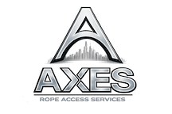

Ispezioni e installazioni
tecniche in quota
AXES esegue ispezioni visive, controlli strutturali e installazioni in quota senza ponteggi, anche in ambienti complessi.

AXES esegue ispezioni visive, controlli strutturali e installazioni in quota senza ponteggi, anche in ambienti complessi.
Le ispezioni in quota permettono di valutare lo stato di strutture, facciate e coperture senza interventi invasivi.
I lavori su fune garantiscono accesso diretto, sicurezza e rapidità, riducendo costi e tempi rispetto ai sistemi tradizionali.
Contattaci per un sopralluogoOperiamo a Milano e in tutta la Lombardia per interventi di manutenzione facciate in quota.
AXES esegue ispezioni tecniche e visive su facciate, coperture e strutture, utili a valutare lo stato di conservazione, il degrado dei materiali e la presenza di infiltrazioni o criticità strutturali.
Sì, tutte le ispezioni vengono eseguite mediante lavori su fune, senza l’installazione di ponteggi, riducendo tempi, costi e impatto sull’edificio.
Oltre alle ispezioni, AXES esegue installazioni in quota come linee vita, sistemi di ancoraggio, cartellonistica e altri elementi tecnici su edifici civili e industriali.
AXES opera a Milano e in tutta la Lombardia per servizi di ispezione e installazione in quota.